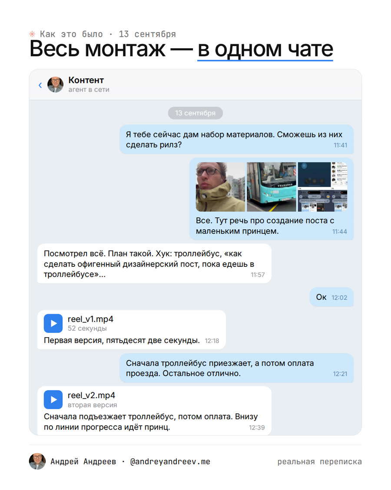

кейс 1.1 · 13 сентября
Десять сырых видео — готовый рилс через 34 минуты
В 11:44 я отправил агенту десять видео, снятых по дороге: восемь селфи с улицы, из троллейбуса, автобуса и кафе и две записи экрана. В 11:57 он прислал план монтажа, я ответил «Ок». Первая версия пришла в 12:18. Я дал одну правку, и около 12:45 ролик уже был в ленте.
3000 ₽ монтажёру0 ₽теперь входит в подписку Claude
1 правкамоё участие целиком: снял, отправил, «Ок», одна правка
моя переписка с агентом 13.09 · пост в Instagram о монтаже

Слева исходники, из которых собран ролик. Справа та самая переписка с агентом.